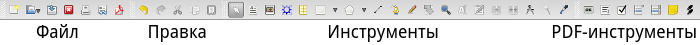
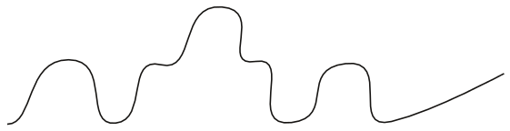

Занятие 1. Знакомство с приложением Scribus
Практическое введение в Scribus
Особенности издательских систем
Scribus — это приложение для создания документов, преимущественно предназначенных для последующей печати и состоящих в основном из обычного текста и изображений. Например, для создания документов, включающих в себя большой количество математических формул, Scribus вряд ли подойдет.
Формирование страниц, их оформление называют версткой документов, а приложения позволяющие это делать — издательскими системами. Scribus — это свободно-распространяемый аналог известных проприетарных издательских систем для визуальной верстки. В таких приложениях на сегодняшний день создаются газеты, журналы, рекламные буклеты и т.п.
Конечно, можно верстать документы в обычных текстовых процессорах (например, Writer или Word), особенно если не требуется замысловатого расположения элементов друг относительно друга. Однако программы для верстки предлагают ряд удобств и возможностей, которые позволяют создавать красивые документы быстрее, и их вид обычно получается более качественный.
Одной из особенностей Scribus является так называемый блочный способ верстки. Если в текстовом процессоре вы вставите картинку в определенное место страницы, а затем до нее начнете писать или редактировать текст, то картинка сместится и окажется совсем не там, где вам надо. В Scribus такого произойти не может, картинка останется на том месте, куда ее поместили, независимо от того, что вы будете делать с другими объектами страницы (текстом, таблицами, другими изображениями). При компоновке страниц — это большое удобство.
Кроме того, в Scribus есть другие особенности, облегчающие верстку. Также он позволяет опубликовать готовый документ в различных форматах (PDF, PNG и многие другие).
Есть еще одно отличие приложений для верстки от текстовых, которое следует всегда помнить. Обычно основная часть материала, входящая в готовящуюся публикацию, располагается в отдельных файлах: текст в форматах текстовых файлов (odt, txt и др.), картинки в форматах графических файлов. Издательская система в основном служит лишь для загрузки этих объектов, взаимного их расположения, оформления. Только небольшие части текста и декоративные элементы имеет смысл создавать непосредственно в Scribus. Можно сказать, что системы верстки являются конструкторами страниц.
Первое знакомство
При запуске программы у вас может появиться диалоговое окно с предупреждением о том, что отсутствует Ghostscript. Это программа для языка PostScript, который представляет собой язык описания страниц. Просто нажмите OK, можно обойтись без этого.
Первое, что перед вами откроется, — это диалоговое окно "Новый документ", где устанавливаются настройки страницы публикации, определяется их количество. В печати обычно используют измерение шрифта в пунктах (pt), это абсолютная величина, равная примерно 0,35 миллиметра, т.е. в одном миллиметре умещается примерно 3 пункта. Когда предполагается, что документ будет печататься на бумаге, то важно иметь дело именно с абсолютными величинами. Главное помните, пункт — это не пиксель экрана монитора.
В одном из полей укажите 3 pt вместо 40 pt, затем поменяйте единицы измерения с пунктов на миллиметры. Убедитесь, что в 3 pt чуть больше 1-го мм. Верните все как было.
Обратим внимание на существующие макеты документа. Если публикация будет состоять всего из одной страницы, то выбирать иные макеты, помимо одиночной страницы, бессмысленно. Когда вы выбираете парные страницы размером допустим A4, это значит, что каждая страница пары будет именно A4. Парность здесь используется для того, чтобы удобно было видеть, как материал будет располагаться относительно друг друга на развороте (если это журнал), также "парность" позволяет задавать разные левые и правые поля в зависимости от того левая это страница или правая. Обратите внимание как меняются названия полей при переключении макета с одиночной страницы на парные: вместо "Слева" и "Справа" появляются "Изнутри" и "Снаружи".
Выберите парные страницы, укажите количество страниц 4, задайте разную ширину полей для "Изнутри" и "Снаружи", нажмите OK. Перед вами окажется белый лист. Зажмите Ctrl и покрутите колесо мыши, чтобы уменьшить масштаб, пока не увидите четыре страницы.
Вторая и третья образуют между собой пару. Теперь представьте, что печать двухсторонняя. Первая страница будет обложкой. Вторая страница — ее внутренней стороной. А третья образует разворот со второй. Четверная страница будет напечатана на обратной стороне третьей. Об этом же "говорят" и поля.
Закройте без сохранения документ, но не Scribus. Выполните команду Файл → Новый. Выберите одиночную страницу альбомной ориентации, нажмите OK.
В Scribus есть четыре панели инструментов: "Файл", "Правка", "Инструменты" и "PDF-инструменты".

С первыми двумя должно быть более менее понятно. Панель PDF-инструментов позволяет добавлять в публикацию такие интерактивные элементы как кнопки, списки, флажки. Обычно они используется при подготовке презентаций или интерактивных страниц, которые далее будут не печататься, а распространяться в формате PDF.
Инструмент, который выбран по умолчанию — это "Выбрать объект" в виде стрелки. Он позволяет выделять объекты на холсте по одному или группой. Если требуется сбросить этот инструмент следует нажать Пробел. В этом случае появится "рука", которая позволит перемещать холст. Вообще, если вы выбрали какой-нибудь инструмент, но потом передумали им пользоваться и решили вернуться к указателю, то следует нажать клавишу C. Далее в скобках будут указываться горячие клавиши инструментов.
Следующий инструмент — это "Текстовый блок" (T).
Выберите его и растяните небольшую рамку на холсте. Кликните по ней два раза и напишите текст на русском и английском языках.
Если русский текст выглядит как пустые квадратики или вообще не набирается, значит по умолчанию используется шрифт, в котором отсутствуют русские буквы. В этом случае следует установить по умолчанию другой шрифт. Для этого выполните команду Файл → Настроить Scribus, в открывшемся окне "Параметры Scribus" слева выберите "Инструменты". В свойствах для текстового блока выберите шрифт, для которого есть как английские, так и русские буквы. Желательно выбрать что-то из популярных шрифтов таких как Arial, Times New Roman, DejaVu и т.п. Новые настройки не применяются к текущему документу. Поэтому закройте его без сохранения и создайте новый.
Оставьте текстовый блок на холсте. Все остальное по поводу текста будет рассмотрено на следующем занятии.
Изображения и рисование в Scribus
Инструмент "Блок изображения" (I) позволяет разместить на холсте блок под изображение, в который далее можно "загрузить" картинку (на самом деле она не загружается, а связывается).
Разместите на холсте блок под изображение. Кликните по нему дважды и выберите небольшое изображение.
Если потребуется поменять картинку в блоке, то уже двойной щелчок не пройдет. Сменить изображение можно через контекстное меню (пункт "Вставить изображение") или нажав Ctrl+I.
Обычно размер блока и размер связанного с ним изображения не совпадают. Здесь можно поступить двумя способами. Либо выбрать в контекстном меню "Блок до размеров изображения", и тогда блок сожмется/растянется до истинного размера картинки. Либо выбрать "Вписать изображение в блок", тогда картинка постарается занять область блока. В последнем случае одну из сторон блока скорее всего потребуется подогнать под картинку, т.к. вряд ли отношения сторон картинки и блока будут совпадать сразу. Когда картинка вписана в блок мы можем менять ее размер, изменяя размер блока (за красные метки). В Scribus для того чтобы взаимосвязанно изменять высоту и ширину любого блока необходимо удерживать Ctrl.
Если изображение слишком большое, то единственный вариант, который вам подойдет — это "Вписать изображение в блок". Однако есть один нюанс, который исчезает, если изображение будет вписано в блок. Вы не сможете перемещать картинку внутри блока, два раза кликнув по ней. А эта возможность может пригодиться для того, чтобы задавать поля — отступы от границ блока до картинки. Поэтому может быть лучше размер изображений подбирать заранее, однако это не всегда удобно.
Два раза кликните по изображению и попробуйте его перемещать внутри блока.
Сделайте так, чтобы изображение помещалось в блок. Добавьте на холст еще один блок с изображением.
Рядом с инструментом "Фигура" (S) есть треугольник. Нажав его, вы увидите коллекции различных фигур.
Разместите пару понравившихся фигур на холсте.
У инструмента "Многоугольник" также есть треугольник, открывающий доступ к свойствам этого инструмента. Здесь можно изменить настройки так, чтобы получилась достаточно замысловатая фигура:

Когда многоугольник настроен и нажата кнопка OK, то он не появится на холсте. Надо выбрать сам инструмент "Многоугольник" (P) и нарисовать его.
Разместите на холсте какую-нибудь звезду.
Следующие три инструмента - "Линия" (L), "Кривая Безье" (B) и "Рисование от руки" (F). Они должны быть вам знакомы из графических процессоров. Линию можно перемещать целиком или изменять ее длину и положение с помощью меток на концах. В Scribus для завершения рисования кривой Безье следует нажать клавишу Esc.
Нарисуйте прямую линию. Попробуйте изменять ее размер и ориентацию.
Нарисуйте примерно такую кривую Безье:

Окно свойств объектов (F2)
Все фигуры и линии, которые мы разместили на холсте, имеют черный контур. В Scribus также как во многих графических редакторах есть возможность изменять цвет и толщину линий, а также добавлять заливку там, где это возможно.
Все настройки объекта расположены в окне "Свойства", которое вызывается либо командой Окна → Свойства, либо из контекстного меню, либо клавишей F2.
Выделите фигуру и нажмите F2. Обратите внимание на то, что в окне активны вкладки "X, Y, Z", "Фигура", "Линия", "Цвета". Оставив окно свойств открытым выделите изображение. Должна стать активна вкладка "Изображение". Теперь выделите блок текста. Должна стать активной вкладка "Текст", а "Изображение" дезактивироваться.
Свойства на вкладке "X, Y, Z" предназначены для изменения имени и размера объекта, его положения, поворота и др. Хотя размер можно менять непосредственно на холсте, иногда требуется точная настройка.
Частично наложите один объект на другой. Попробуйте изменять его уровень таким образом, чтобы он оказывался то под, то над другим объектом.
Поверните какой-нибудь объект на 10-20 градусов. Обратите внимание, как влияет на поворот опорная точка.
На вкладке "Фигура" можно применить к объекту любую фигуру из встроенных в Scribus коллекций. Если выделена фигура, то она меняется на выбранную. Если же выделено изображение или текст, то они вписываются в указанную фигуру. Тем самым можно добиться интересных эффектов.
Выделите изображение и выберите для него фигуру отличную от прямоугольника.
Если вы нажмете на кнопку "Изменить", то откроется возможность править узлы объекта. Тем самым можно придать ему абсолютно любую форму.
Изначально обтекание текстом вокруг блока находится в состоянии "Выключено". Это значит, что если блок изображения помещается над текстом, то он перекроет текст. Чтобы этого не происходило, следует включить обтекание "По очертаниям блока".
Перекройте изображением часть текста. Включите для изображения обтекание по очертаниям блока.
Свойства вкладки "Текст" будут рассмотрены на следующем занятии.
Выделите изображение. На вкладке "Изображение" нажмите кнопку "Эффекты изображения". Примените к изображению понравившийся вам эффект.
На вкладке "Линия" настраиваются такие свойства контура как его тип, толщина и др., для отрезков и кривых — также вид начала и конца. Для изображений вы не увидите изменения контура, пока для него не будет включен цвет на вкладке "Цвета".
На вкладке "Цвета" настраиваются цвета для контура (здесь он называется обводкой) и заливки. Обратите внимание, что можно создавать различные градиенты и указывать прозрачность.
Выделите любую фигуру (например, звезду), выберите цвета для обводки и заливки. Для заливки выберите один из видов градиента. На появившейся шкале цвета добавьте опорную точку, щелкнув под шкалой. Задайте для новой точки другой цвет (например, белый).
Сохранение документа
Scribus сохраняет документ в собственном формате, имеющим расширение *.sla.
Сохраните ваш документ.
Готовые документы для их распространения и возможной последующей печати чаще всего экспортируют в формат PDF. Вызвать окно экспорта в PDF можно как с помощью соответствующей кнопки на панели инструментов, так и выполнив команду Файл → Экспортировать → Сохранить как PDF.
После этого сначала появится окно "Допечатная проверка", в котором будут указаны проблемы вывода в соответствующий формат. В основном их все можно проигнорировать, нажав кнопку "Игнорировать ошибки". Далее появляется диалоговое окно настроек экспорта в PDF. Оно позволяет проконтролировать и задать значения для множества свойств PDF-документа.
Перед экспортом в PDF желательно указывать информацию о документе (хотя бы его заголовок). Делается это в окне "Параметры документа", открываемом через меню "Файл", в разделе "Информация о документе".
Укажите для вашего документа информацию о нем (заголовок и автора) и сохраните в формате PDF. С помощью программы для просмотра PDF-документов посмотрите, что у вас получилось.